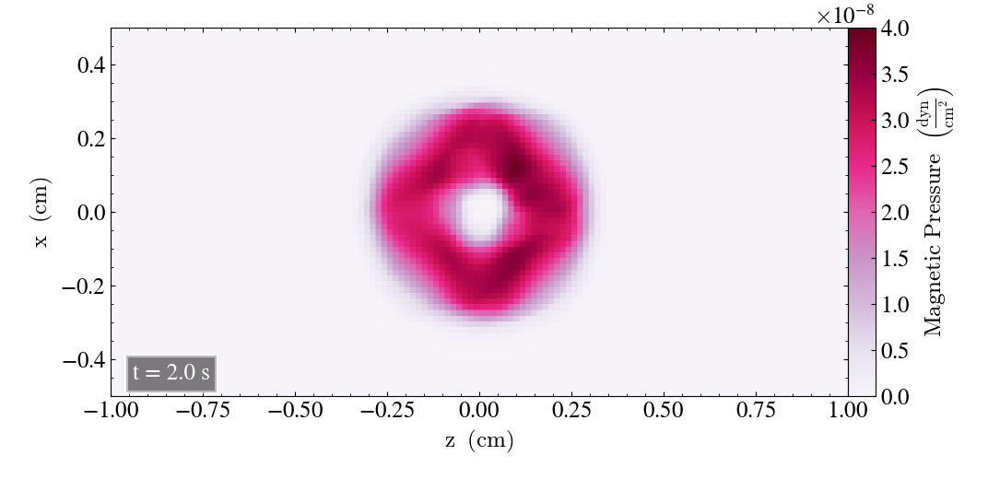
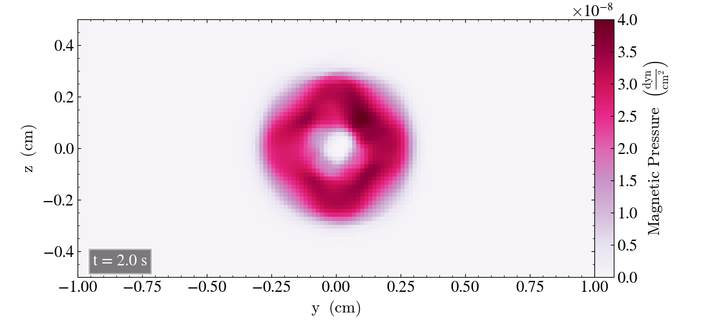
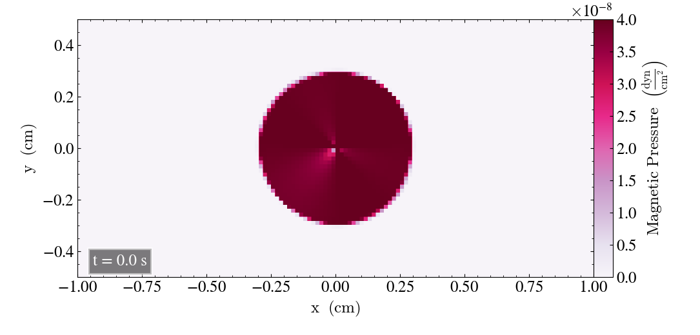
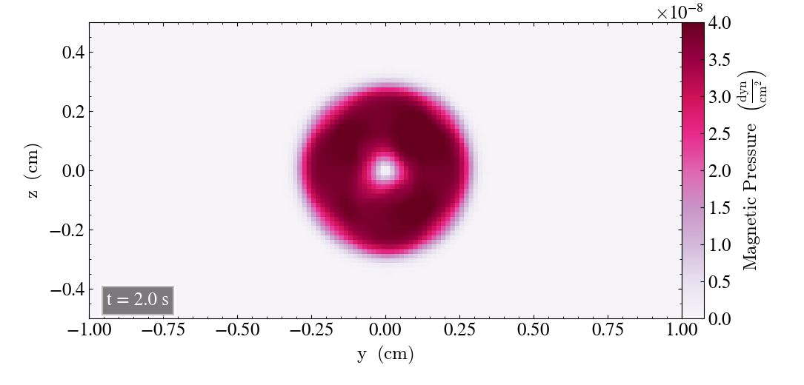
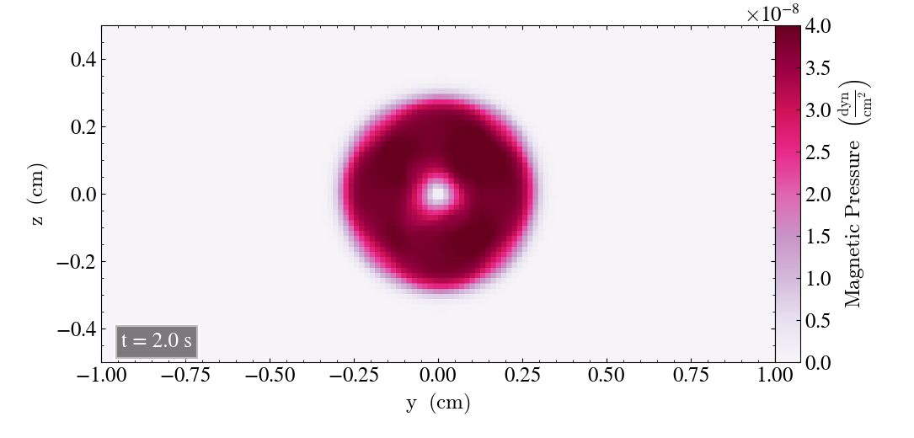

Magnetic Field Loop Advection¶
In this experiment we report the results of the Magnetic loop advection experiment, where we study the result from changing different bifrost parameters for the bifrost solver and slope_types for the ramses/mhd_eos solver.
- The experiment was run on
branch: develop
hash: aff3841
Simulation parameters¶
We will here report the initial parameters used for running the experiment. We tabulate the grid parameters for the xy-direction explicitly, and state the differences related to the other planes
Output parameters¶
For the output parameters
out_params |
||
|---|---|---|
end_time |
out_time |
print_time |
2 |
0.2 |
0 |
Using end_time=2.0, the magnetic loop completes two whole cycles for the initial velocities and cartesian parameters we have used, which is stated below.
Initial conditions¶
For the xy-plane we have
cartesian_params |
||||
|---|---|---|---|---|
size |
dims |
mpi_dims |
origin |
periodic |
2,1,0.0625 |
4,4,1 |
1,1,1 |
-1,-0.5,0 |
t,t,t |
patch_params |
||||
|---|---|---|---|---|
nt |
n |
no_mans_land |
do_check_nan |
grace |
5 |
32,16,1 |
t |
t |
0.05 |
IC_params |
||
|---|---|---|
idirect |
ux |
uy |
3 |
2 |
1 |
Where ux=2 and uy=1 causes the loop to move from it’s initial position at the box’s center and towards the upper right corner.
For the zx-plane the simulation was run by using n=16,1,32, and changing the other parameters accoridnagly. For the yz-plane the simulation was run by setting n=1,32,16, with the remaining parameters changed accoridngly. For the yz-plane idirect=1 and for the zx-plane idirect=2.
Solver parameters¶
- For the gas, we used a gamma-law equation of state with
gamma=5/3
Bifrost parameters¶
For the bifrost solver we initially used
bifrost_params |
|||||
|---|---|---|---|---|---|
Ca |
U |
Uv |
d |
e |
E |
0.05 |
0.1 |
0.2 |
0.05 |
0.05 |
0.5 |
Ramses parameters¶
- For the ramses solver, we initially used
slope_type=3.5
Initial results with unchanged parameters¶
We will here report the initial results where we use the bifrost parameters listed above. Initially, we plot the result after t=0s and t=2s for all three planes, in order to check for differences.
For the xy-plane we get

For the zx-plane we get
And finally, for the yz-plane
Behaviour of loop in the xy-plane¶
Now, we include snapshots of the run in the xy-plane to show the behaviour of the loop throughout the simulation. This will be used for comparison later on


And the loop has returned to the initial state after t=1s.
Static behaviour¶
We will now check the behaviour of the loop for the static case, where we set the u-values (ux, uy, uz) to zero for all the directions. We will plot the result for t=0s and t=2s for all three directions.
For the xy-plane we get
For the zx-plane we get

Finally, for the yz-plane we get
 



{kind=link}
{kind=link}
{kind=link}
{kind=link}
{kind=link}
{kind=link}
{kind=link}
{kind=link}
{kind=link}
{kind=link}
{kind=link}